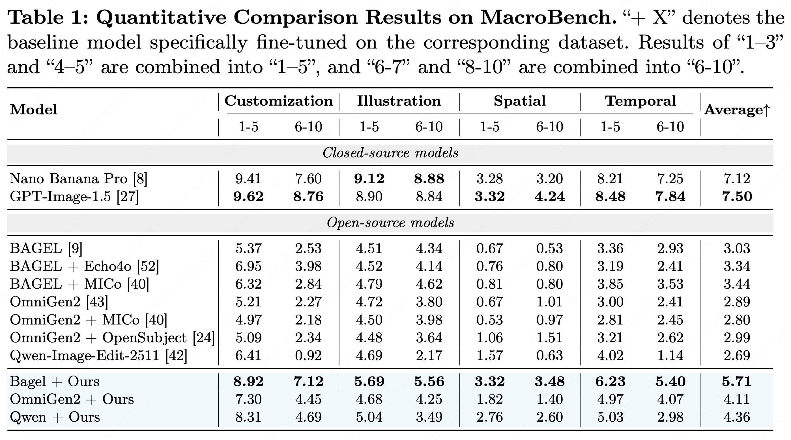

Dataset Overview
Data Samples

Data Statistics
MacroData comprises 400,000 high-quality samples spanning four tasks, curated from diverse real-world sources. The dataset supports up to 10 inputs per sample with an average of 5.44 references. It is structured across four reference image count categories — 1–3, 4–5, 6–7, and 8–10 images — enabling fine-grained evaluation of models' ability to leverage increasing amounts of visual context. Each task is composed of 100k samples, split into different numbers of reference images.
Each task is independently sourced and verified. Customization focuses on generating compositions conditioned on multiple reference images, covering diverse human and object subjects with varying backgrounds. Illustration aims at producing illustrative images based on multimodal context, featuring diverse topics derived from interleaved contexts. Spatial requires predicting novel view images given multiple views, leveraging structured multi-view captures of indoor scenes, outdoor environments, and isolated objects. Temporal involves forecasting future frames based on historical sequence, with data extracted from video sequences with dense temporal correspondence. Rigorous LLM-based quality filtering ensures that each retained sample satisfies task-specific consistency and instruction-following criteria, resulting in a benchmark with high signal-to-noise ratio suitable for both training and evaluation.